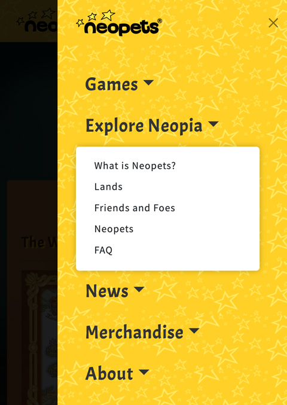

Task 3
Explore Neopia
Suggestions
1. Too many Information in One Page
- Consider dividing the rich contents of Neopets, Lands, Friends and Foes into individual pages for a more organized structure.
- The mobile mode is lengthy, making it challenging for users to find what they want easily.
2. Lack of Detailed Information for Each Character/Land/Pet
- Users may want detailed information for each section, such as NPC locations, quests, interactions, or details about lands and Neopets.
- NPC: Include details like the NPC's location, quests, and interaction possibilities.
- Lands: Provide information on the NPCs in the land, available quests, and activities within the land.
- Neopets: Include details on where to obtain the pet, its capabilities, and potential interactions.
3. Lack of Information for Newbies
- Newbies may struggle with understanding how to play Neopets and what activities are available. Provide guidance for newbies on gameplay and list essential game features.
- Include basic gameplay videos and list resources for newbies seeking assistance.
Journey map
1. Revamp the structure of the page
Suggestions
1. Pull Explore Neopia Out as One of the Main Links in the Menu
- Divide the rich content into separate pages for a more organized structure.
- Ensure it serves as a valuable resource for newbies and fans, providing knowledge and support.
Suggestions
The page is designed as a quest scroll with bookmarks (links to other pages) on the right corner.
1. Interactive Map
- Implement an interactive map for users to gain a brief understanding of the world of Neopets. Desktop users can tap on the map to see the number of NPCs, pets, and quests in that area. Due to limited space on mobile, an alternative presentation may be needed.
- List some popular game features using videos or images. Utilize a slider for mobile users to showcase these features.
- Add a "PLAY NOW" button for users interested in trying the game immediately.
- Considering adding a community forum link button for users to quickly access topics of interest.
Suggestions
1. Using Slider to Show Each Land's Introduction
- Utilize a slider to showcase each land's introduction, using cards to display details including NPCs and quests for each land.
- Introduce an element of randomness in displaying lands when users load the page.
- Make NPC and Quest badges clickable links or hashtags for potential use in future forums or FAQs.
- The slide can also shows the total number of lands for a comprehensive overview.
- Implement easy swiping for mobile users to access more information.
Suggestions
1. Using Slider to Show Each Land's Introduction
- Utilize a slider to showcase each land's introduction, using cards to display details including NPCs and quests for each land.
- Introduce an element of randomness in displaying lands when users load the page.
- Make NPC and Quest badges clickable links or hashtags for potential use in future forums or FAQs.
- The slide can also shows the total number of lands for a comprehensive overview.
- Implement easy swiping for mobile users to access more information.
Suggestions
1. Using Slider to Show Each Land's Introduction
- Utilize a slider to showcase each land's introduction, using cards to display details including NPCs and quests for each land.
- Introduce an element of randomness in displaying lands when users load the page.
- Make NPC and Quest badges clickable links or hashtags for potential use in future forums or FAQs.
- The slide can also shows the total number of lands for a comprehensive overview.
- Implement easy swiping for mobile users to access more information.
5. FAQ
Suggestions
1. Using Slider to Show Each Land's Introduction
- Utilize a slider to showcase each land's introduction, using cards to display details including NPCs and quests for each land.
- Introduce an element of randomness in displaying lands when users load the page.
- Make NPC and Quest badges clickable links or hashtags for potential use in future forums or FAQs.
- The slide can also shows the total number of lands for a comprehensive overview.
- Implement easy swiping for mobile users to access more information.